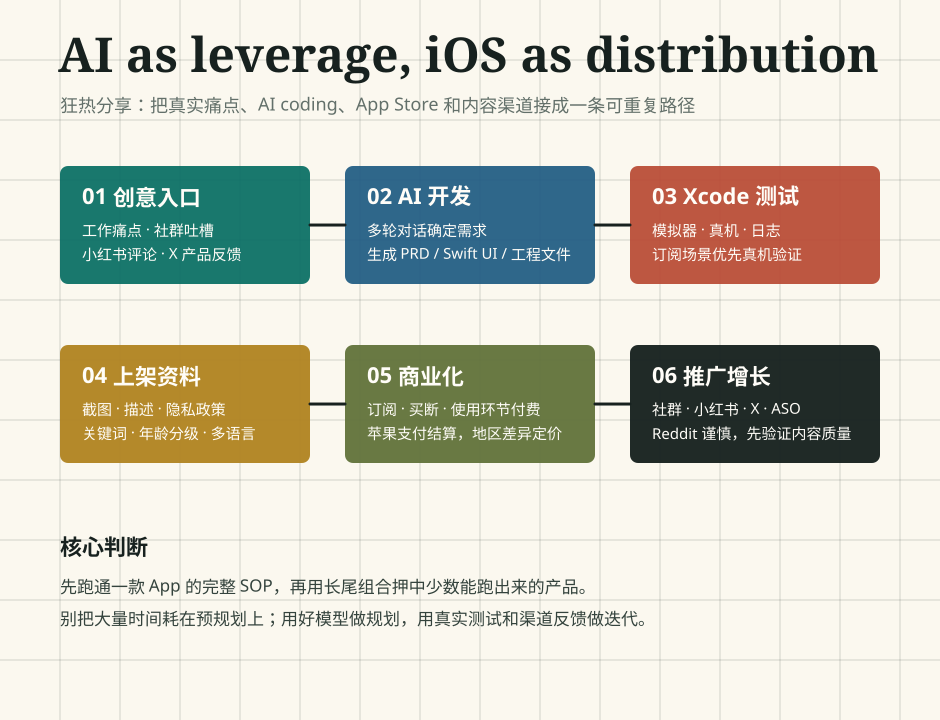

不是先规划完美产品
分享者反复强调：有真实 idea 就先做，让好模型负责规划，先跑出一个能测试、能打包、能提交的最小版本。过度规划会把人困在“还没开始”的阶段。
2026-05-17 · 狂热 · 内部完整版复盘
这场分享不是泛泛讲“AI 可以写代码”，而是把一个个人开发者从想法、开发、Xcode 真机测试、App Store 上架、订阅变现到社群和小红书推广的真实路径拆开。核心问题只有一个：怎样把 AI coding 从玩具变成可重复的收入实验。

分享者反复强调：有真实 idea 就先做，让好模型负责规划，先跑出一个能测试、能打包、能提交的最小版本。过度规划会把人困在“还没开始”的阶段。
第一个 App 最费时间，因为要摸清开发、上架、审核、订阅、推广全链路。一旦路径跑通，后续工具类 App 的边际成本会显著下降。
开发门槛被 AI 降低后，真正卡住个人开发者的是 App Store 关键词、内容渠道、社群信任和持续分发。小红书、X、社群各自承担不同角色。
Reading Map
这份网页被做成多页专题站：参会者可以快速复盘，没参会的人可以按流程学习。
Core Thesis
创意来自工作痛点、社群吐槽、成熟产品评论区、小红书问题帖和 X 上的新产品反馈。个人觉得“好”不等于市场会买单。
硬门槛是 Mac、Xcode、Apple ID 和 99 美金开发者账号。建议准备国区和美区账号，方便调试和上架后测试。
不需要手写 Swift，但要会提出需求、给截图、看效果、做回归测试、把报错贴回模型。开发者角色从“写代码”变成“指挥与验收”。
项目能在 Xcode 打开、有 `.xcodeproj`、能跑模拟器或真机、能 Archive，才进入上架路径。付费订阅相关能力最好真机测试。
上架时可选择全球分发。最少做中英双语，想吃更多市场红利则扩展多语言，并检查长文本是否撑坏 UI。
订阅和买断都走苹果支付，开发者账号绑定银行卡即可等待苹果结算，不需要先解决 PayPal、海外公司或外卡。
早期不要碰直播、社交、交易等复杂合规类型。工具类审核和支付路径更简单，也更适合个人反复试错。
不是每个 App 都赚钱。分享者的判断是：如果几十个 App 里跑出来一两个，长尾收入就可能覆盖成本并形成正循环。
“碰到了 AI，我觉得是一个第二曲线的非常好的增长开端。我们利用 AI 这种能力，为个人能力扩展打造第二曲线。”
约 00:13:01，来自逐字稿校对
来源：飞书智能纪要、文字记录、妙记 AI 产物与逐字稿。页面为内部学习版，不包含完整逐字稿全文和临时媒体下载直链。